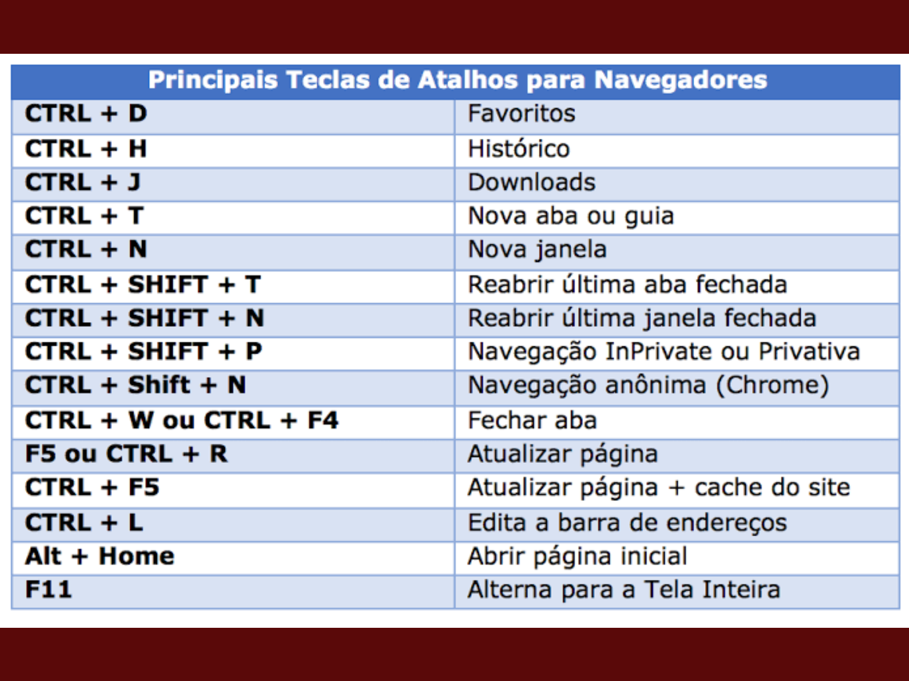

voce provavelmente já esteve com o celular cheio e pediu para o seu neto/filho ajudar, ele pode ter sugerido colocar os arquivos na nuvem, mas oque é essa tal de nuvem?
nuvem é um esquema que armazena os arquivos em nuvem, como o google drive, mega, onedrive, entre outros, assim seus arquivos são acessados remotamente a partir de seu celular
tela touchscreen, é um tipo de tela que não serve apenas para ver a imagem, mas tambem mecher no dispositivo, as telas dos smarthphones possuem tal tela, por isso que voce não fica pressionando os botões fisicos toda hora
whatssap web é uma ferramente que permite usar o whatsap no seu computador, é um site que possui um qr code, voce deve apontar seu celular no qr code usando a opção "aparelhos conectados" em seu celular, ocorrerá uma sincronização e voce poderá usar no seu computador
as teclas de atalho são teclas que realizam funções que poderiam ser feitas pelo mouse, antes da invenção do mouse, todas as operações eram feitas pelo teclado, voce tinha que pressionar uma sequencia de tecla para cada operação, hoje em dia ainda existem essas sequencias, com funções como abrir ou fechar, acessar historico e atualizar pagina, segue abaixo uma lista
megabytes, gigabytes, voce já deve ter ouvido falar, mas oque são?, se tratam de uma medida para a quantidade de informação armazenada no dispositivo, seu aparelho celular fica com a memoria cheia, por tanto é necssario apagar arquivos, um dos maiores problemas é o ecxesso de arquivos do whatssap, fotos, video, audio e texto ocupam espaço de armazenamento, quando falta pouco armazenamento sobrando o celular fica lento, portanto é bom apagar conversas antigas do whatsap
os mais jovens quando caiu o whatsap no brasil por meio de politica sugeriram aos mais velhos usarem outro aplicativo de mensagem, um desses foi o discord, alguns rejeitaram, mas há vantagens, o discord não armazena dados no proprio celular, voce não tem o problema do whatsap de ter que apagar arquivos, porem é mais dificil de usar, para quem possui celular com pouco espaço de armazenamento é uma boa ideia usa-lo
os caracteres especiais são caracteres que não são acessiveis diretamente, possuem uma semelhança com os atalhos, é necessario pressionar uma sequencia de teclas para escreve-los, exemplo: "shift + 3 para exibir #", porem nem sempre vão estar sendo exibidos acima do caractere padrão da tecla, como o 3 que acima possui o #, caracteres como æ,◄,﹄ não aparecem na maioria dos teclados
recentemente surgiu algo chamado chatgpt, se trata de uma inteligencia artificial disponivel publicamente na internet, clicando aqui voce já consegue acesso, sendo necessario logar antes ou se cadastrar, é uma ferramente de geração de texto, geralmente se usa para responder perguntas, o uso mais padrão, mas tambem é usado para a criação de textos e resumos
está preparado para responder o questionario?, então clique AQUI